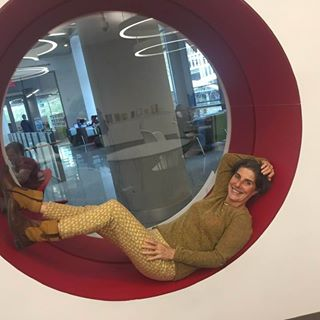

«Metodes priekš atbrīvošanās no sāpēm locītavās izraisa tikai neizpratni». Slavens japāņu reimatologs deva atklātu interviju izdevumam
Doktors Jošinori Ošumi (Yoshinori Ohsumi)— Tokijas medicīnas universitātes profesors, Nobela prēmijas medicīnā laureāts. Saņēma Nobela prēmiju par autofāģijas mehānisma atklāšanu - organisma dziedēšanas un atjaunošanas šūnu līmenī.
Pagājušajā gadā Jošinori Ošumi atbrauca uz Eiropu, lai izpētītu savu kolēģu pieredzi. To, ko viņš ieraudzīja Eiropā, pēc viņa teiktā, nav iespējams izskaidrot. Eiropas valstīs, kā apgalvo dr. Ošumi, vienkārši nav medicīnas kā tādas....
Pēc skaļajām uzstāšanām Japānā dr. Ošumi piekrita sniegt interviju izdevumam. Kas slavenajam ārstam nepatika reimatoloģijā? Un kāpēc viņš apgalvo, ka Eiropā NAV IESPĒJAMS ATBRĪVOTIES NO LOCĪTAVU SLIMĪBĀM principā?
Uzstājoties Japānas žurnālistu priekšā, jūs teicāt, ka Eiropā redzētais Jūs šokēja. Vai jūs varētu to nokomentēt?
- Uzreiz gribu pateikt, ka es labi izturos pret Eiropu, Eiropas kultūru un Eiropas pilsoņiem. Bet tas, kādā stāvoklī ir jūsu medicīna, patiešām izraisa mūsu ārstu šoku. Jūsu medicīna atpaliek par vismaz 20, bet varbūt arī visiem 30 gadiem. Vismaz reimatoloģijā.
Galvenie līdzekļi locītavu ārstēšanai – KYTTA-SALBE, ARTHROVITAN un citi līdzīgi preparāti
Tomēr katrs japāņu ārsts zina, ka šie līdzekļi NEĀRSTĒ LOCĪTAVU SLIMĪBAS! Tie nav spējīgi uz to! Viss, ko tie var, ir noņemt sāpju sindromu uz kādu laiku. Tas ir, sāpes un tūska pazūd, cilvēks priecājas par atveseļošanos, bet patiesībā kardinālas izmaiņas locītavā nenotiek. Tā paliek tikpat bojāta, kā bija. Tādēļ pēc kāda laika atkal sāk sāpēt. Ko dara ārsti šajā gadījumā? Viņi saka, ka slimība ir hroniska un pilnībā to izārstēt nav iespējams.
Japānā, tagad vispār nav tādu jēdzienu kā HRONISKA ARTROZE vai HRONISKS ARTRĪTS. Kādēļ? Tādēļ ka gan artroze, gan artrīts, tāpat kā jebkuras citas locītavu slimības labi padodas terapijai.
Kāpēc ārsti to dara? Manuprāt, lieta ir pašā medicīnas sistēmā. Lieta tāda, ka neviens – ne ārsts, ne vēl jo vairāk aptieku tīkli – nav ieinteresēti tajā, lai cilvēks kļūtu pilnīgi vesels. Tieši pretēji viņiem ir izdevīgi, lai cilvēks vērstos pie viņiem atkal un atkal. Bet kas mani visvairāk pārsteidza tas ir, ka pa televizoru nepārtraukti runā par it kā eksistējošo aptieku mafiju, ka tā visu okupēja. Un pie tam neviens neko ar to nedara. Visiem nospļauties!
Jūsu ārsti un farmaceiti izvelk pēdējo naudu no pensionāriem, un tas tiek uzskatīts par normālu.
- Un kā Japānā veicas ar slimo locītavu terapiju?
- Lielākā daļa locītavu slimību veiksmīgi padodas terapijai. Japāņu zinātnieki jau sen ir sapratuši, ka ir nepieciešams novērst nevis patoloģijas sekas (sāpes, ierobežotas kustības, iekaisumu utt.), bet iemeslus. Tas ir, novērst to, kā dēļ locītavas bojājas. Un bojājas tās asinsrites pasliktināšanās dēļ, kas rodas VISIEM CILVĒKIEM vecumā.
Skatieties, mēģināšu izskaidrot vienkārši. Locītavu asinsapgāde sākas ar lielo artēriju stumbriem, kas atrodas tām blakus. Asins plūsma, kas iet caur to asinsvadu atzarojumiem, piesātina periartikulāros audus. Asinsvadu atzarojumi – tie ir sīkie kapilāri. Ar gadiem tie aizsērē ar holesterīnu, un asinis pārstāj iet tiem cauri. Rezultātā pasliktinās gan barības vielu piegāde locītavai, gan arī nevajadzīgo vielu novadīšana no locītavām.
Rezultātā pasliktinās skrimšļa stāvoklis, tajā sākas patoloģisks žūšanas process, locītava zaudē elastību. Kas notiek tālāk? Un tālāk notiek sekojošais – sašaurinās locītavu spraugas, kauli sāk saskarties un rada berzi. No tā parādās krakšķēšana un aizķīlēšanās.
Tā kā no locītavas pārstāj izvadīties pārstrādātās vielas tie burtiski piesārņojas, veidojas kaulu izaugumi — osteofīti. To straujā izplatīšanās ved pie asinsvadu un nervu galu saspiešanas, kas izraisa iekaisumu un sāpīgas sajūtās.
Visām locītavu slimībām – neatkarīgi no veida un etimoloģijas ir viens asinsrites traucējumu cēlonis. Un tagad padomājiet, ko vajadzētu darīt, lai atjaunotu locītavu? Pareizi! Atjaunot asinsriti.
Par laimi, skrimšļaudu šūnām piemīt reģenerācijas spēja. Tas nozīmē, ka, ja radīt piemērotus apstākļus (normalizēt asinsriti), tad locītava var tikt atjaunota pilnībā. Cilvēkam pāriet sāpes un iekaisums. Locītava kļūst tikpat kustīga kā jaunībā. UZ VISIEM LAIKIEM! Cilvēkam vairs nenāksies dzert pretsāpju tabletes un smērēt ziedes. Nevajadzēs baidīties, ka lieka neuzmanīga kustība kļūs par baisām sāpēm. Cilvēki kļūst pilnīgi veseli.
- Kā atjaunot asinsriti locītavās?
- Šodien ir ļoti labi līdzekļi, kas atjauno asinsriti locītavās. Viena no svarīgākajām šādu līdzekļu aktīvajām vielām ir haizivs aknu eļļa. Šī viela spēj iekļūt holesterīna molekulu iekšā, un iznīcināt tās no iekšpuses. Galu galā attīras pat sīkie kapilāri.
Piemēram, ļoti labs līdzeklis, kas paredzēts asinsrites uzlabošanai un locītavu atjaunošanai – . Papildus haizivs aknu eļļai satur vēl daudz citu sastāvdaļu, kas paredzētas locītavu funkcionalitātes uzlabošanai. Neuzskaitīšu tos visus, minēšu tikai dažus.
|
Velna nags |
Samazina tūsku locītavās un bojātajos audos. Nomāc iekaisuma procesus. Atvieglo locītavu kustīgumu. |
|
Hondroitīns |
Stimulē hialuronskābes sintēzi. Stiprina skrimšļa, cīpslu un saišu savienojošās struktūras. Veicina aktīvu skrimšļa reģenerāciju. |
|
Glikozamīns |
Baro locītavas un savienotājaudus, novērš to noiršanu un pilnībā nostiprina ārstēšanas rezultātu. |
|
Bosvēlijas sveķu ekstrakts |
Dabisks pretiekaisuma un pretsāpju līdzeklis. Palīdz mazināt locītavu skrimšļaudu deģenerāciju. Sniedz aizsargājošu iedarbību locītavām. |
|
Bromelaīns |
Veicina mikrocirkulācijas pastiprināšanu locītavu audos. Noņem sāpju sindromu. Aktivizē locītavu audu reģenerāciju. |
Kā redzat, piemīt kompleksa iedarbība.
- Šis līdzeklis nav nopērkams aptiekās?
- Tā ur jau tā lieta, ka nē. Ārsti dod priekšroku pelnīt uz pensionāriem un slimiem cilvēkiem, tā vietā, lai viņiem palīdzētu. Neskatoties uz to, bez šaubām, reimatologi, vismaz tie, kas interesējas par progresīvām terapijas metodēm, zina par haizivs aknu eļļas ārstnieciskajām īpašībām un tās labvēlīgo iedarbību uz locītavām.
Cik es zinu, a ražotājs gribēja iziet uz farmakoloģijas tirgu. Bet viņam neļāva to izdarīt, izdomājot simtiem šķēršļu (birokrātija ir nepārvarama). Un tas ir saprotams – ja šis līdzeklis parādīsies aptiekās, tad aptieku mafija cietīs kolosālus zaudējumus. Jo farmakoloģija šodien ir bizness! Pat Japānā. Bet Japānā šis bizness ir godīgs (vērsts uz cilvēku atveseļošanos), bet Eiropā nē!
- Ko jūs ieteiktu cilvēkiem ar slimām locītavām, kas dzīvo Eiropā?
Parasti cilvēki, it īpaši cilvēki pēc 50 gadiem, cieš no medicīnas atpalicības visvairāk. Bet par laimi izeja ir. Mēs sadarbībā ar kolēģiem no Japānas izstrādājām mājas lapu, kurā var viegli iegādāties . Tas ir lēts, pieejams un viegli lietojams
Tagad es pastāstīšu, kas jādara, lai saņemtu :
Nepieciešams:
- Doties uz oficiālo mājas lapu un atstāt pieteikumu;
- Pēc kāda laikā ar jums sazināsies ārsts-konsultants, atbildēs uz visiem jautājumiem, kas jums radušies. Viņam vajadzēs pateikt piegādes adresi;
- Pēc 5-7 dienām, vajadzēs aiziet uz pastu, lai saņemtu sūtījumu.
Oficiālo mājas lapu mēs izplatām jau 3 mēnešus. Šo iespēju jau ir izmantojuši vairāki tūkstoši pilsoņu. Visiem, kas saņēma līdzekli, mēs lūdzam iziet aptauju – cik labi viņiem tas palīdzēja. Šobrīd aptaujā ir pieņēmuši dalību vairāk nekā 3000 cilvēku.
Aptaujas rezultāti:
- Locītavas pārstāja sāpēt, izzuda krakšķēšana un kustību ierobežojumi – 98% aptaujāto
- Iekaisumu noņemšana, tajā skaitā iekšlocītavu – 97% aptaujāto
- Pārgāja sāpes laika apstākļu maiņas dēļ – 94% aptaujāto
- Ievērojami locītavu darbības uzlabojumi kopumā – 99% aptaujāto
- Cik ilgi tiks pārdots ?
- Kamēr nebeigsies piešķirtā partija. Bet uzreiz gribu brīdināt, ka iepakojumu atlicis pavisam nedaudz. Pēdējā laikā to pasūta arvien vairāk un vairāk. Laikam cilvēki uzzina par tā augsto efektivitāti, salīdzinājumā ar parastajiem mazefektīvajiem līdzekļiem.
Kamēr piešķirto iepakojumu skaits nav beidzies, es iesaku visiem, kam sāp locītavas, atstāt pieteikumu tā saņemšanai oficiālajā mājas lapā
Kate
Paldies! Interesants raksts! Ko tur runāt, medicīna mums atpalikusi. pasūtīju!
 Ženis Solītis
Ženis Solītis
Es esmu viens no tiem, kas jau ir paspējis izmēģināt . Tas tiešām ir labākais. Locītavas sāpēja vairākus gadus. Plecu un ceļu, smeldza pastāvīgi. Tagad nesāp vispār. Pārgāja tikai pa vienu kursu.
 Silvestrs Kalmēns
Silvestrs Kalmēns
Man ir 63 gadi. Locītavas bija gandrīz pilnībā iznīcinātas artrozes dēļ. Staigāju ar nūjiņu. Sāpes bija briesmīgas, it īpaši naktīs. Vairs pat necerēju, ka kādreiz varēšu atbrīvoties no sāpēm. Tagad pat varu skriet! Un tas manā vecumā! Izgājām ārstēšanās kursu kopā ar sievu pagājušajā gadā. Atveda meita, kad bija atvaļinājumā ārzemēs.
 Anete Jēkabsone
Anete Jēkabsone
Piekrītu ārstam!! Mums medicīna vienmēr ir bijusi ne visai laba. Visi grib naudu, un nevienam nav sirdsapziņas. Es vairs neiešu pie ārstiem – vienalga, jēgas nekādas. Paldies cilvēkiem, kas tā palīdz parastiem ļautiņiem…
Sems
Ar palīdzību atbrīvojos no aizlaistas osteohondrozes. Lika to mājas lapā pirms 2 mēnešiem ar akciju.
 Sofija Šmite
Sofija Šmite
Atstāju pieteikumu. Solīja, ka pēc dažām dienām varēšu saņemt pasūtījumu. Ļoti gaidu.
 Bens Stilve
Bens Stilve
Tas tiešām ir kaut kas ar kaut ko! Vēl nedēļu atpakaļ locītavas sāpēja tā, ka nezināju, kur likties. Šodien nesāp vispār. Nedēļu lietoju . Japāņu zinātnieki ir malači!
 Karolīna Kumerdanka
Karolīna Kumerdanka
Man ir 61 gads. Izgāju kursu. Apmēram gadu atpakaļ šausmīgi sāpēja locītavas, smeldza un tās burtiski grieza ārā. Sāpēja kauli: elkoņi, ceļi un visi kauli no ceļiem līdz potītēm. Pie ārstiem gāju, teica pilnīgi vesela. Plus visu laiku krakšķēja skriemeļi un kauli virs iegurņa. Viss tas pārgāja, kad sāku smērēt . Ieteica man to draudzene. Viņa arī ar to glābās!
 Liene Selecka
Liene Selecka
Abi ar vīru esam pensionāri. Abiem sāp locītavas. Dārga ārstēšana mums nav pa kabatai, tāpēc tiklīdz uzzinājām par , nekavējoties to pasūtījām. Lietojam trešo nedēļu. Pat ārsts teica, ka locītavu stāvoklis ir ievērojami uzlabojies.
Aurora Ezermane
Man ir 51 gads, no tiem 26 gadus mocīja sāpes mugurā – jostas-krustu osteohondroze. Ar ko tikai neārstējos – viss bez rezultātiem! 2010. gada rudenī "izlīda" mugurkaula trūce, neiriķirurgi uzstāja uz operācijas - atteicos, dzīvoju uz pretsāpju līdzekļiem un pretiekaisuma tabletēm un injekcijām – bez īpaša rezultāta. No tām zālēm vispār sāka sāpēt iegurņa locītavas, vispār staigāt nevarēju. Reimatologs ieteica hondroprotektorus lietot pastāvīgi. Bet arī tie ir praktiski nepalīdzēja. Pagājušā gada sākumā caur paziņām Japānā dabūju . Galu galā pa 1 terapijas kursu VISAS locītavas kļuva pilnīgi veselas. Ļoti iesaku pasūtīt šo līdzekli visiem, pie tam uzreiz ņemt kursu. Pirku to par pilnu cenu, tad tas šausmīgi dārgs bija. Tagad pasūtīju vēl kursu katram gadījumam. Šī cena ir gandrīz trīs reizes lētāka par to, par ko es tad ņēmu, tāpēc kāpēc gan ne
 Maihaēls Dambergs
Maihaēls Dambergs
Vakar saņēmu pasūtījumu. Līdz pēdējam domāju, ka tas ir apmāns. Bet līdzeklis ir man rokās, un es saņēmu to gandrīz par velti.
 Mareks Žīgurs
Mareks Žīgurs
Man arī palīdzēja atbrīvoties no aizlaistas artrozes un podagras! Ļoti labs līdzeklis.
 Edgars Lepstis
Edgars Lepstis
Vasarnīcas kaimiņš agrāk bieži sūdzējās par sāpēm locītavās. Bet pēdējo mēnesi redzu viņu aktīvu un dzīvespriecīgu. Stāstīja, ka lietoja . Viņam ir 72 gadi.
 Kornēlija Briede
Kornēlija Briede
Paspēju pasūtīt. Pagaidām vēl ir.
 Ainārs Gelazs
Ainārs Gelazs
Paldies!
Komentāri